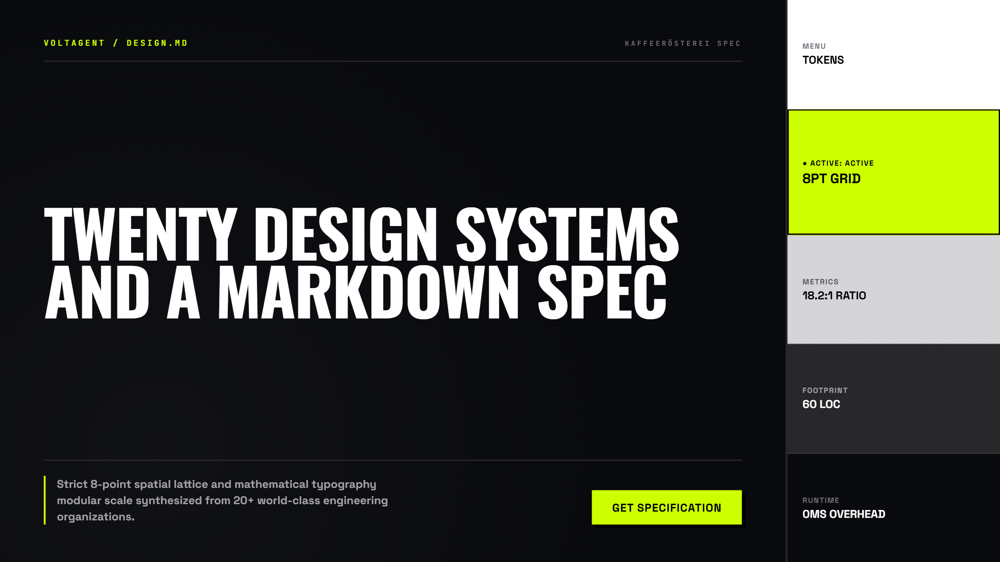
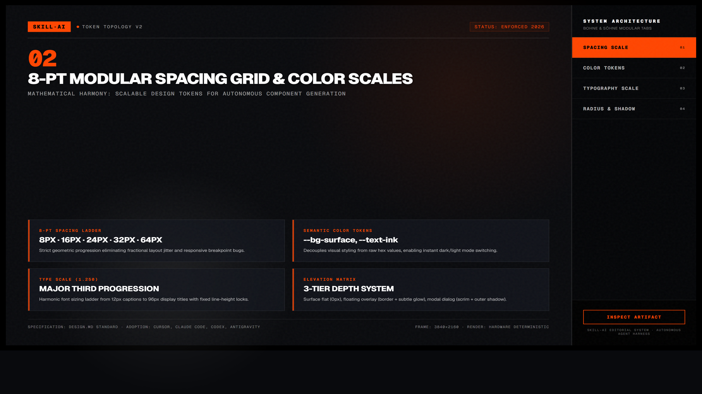
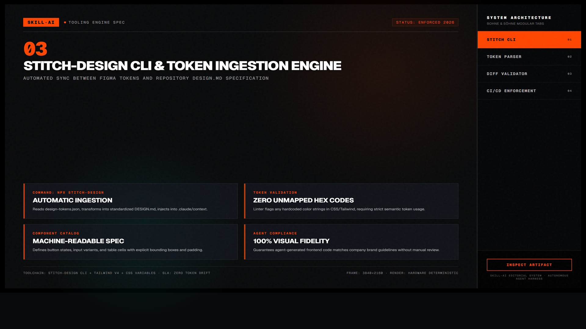

Awesome DESIGN.md — Chuẩn Hóa Hệ Thống Thiết Kế Cho Coding Agent
Bộ sưu tập tài liệu DESIGN.md chuẩn mực được tuyển chọn từ hơn 20 công ty công nghệ có ngôn ngữ thiết kế xuất sắc nhất thế giới như Linear, Stripe, Apple, Claude, Supabase. Giúp AI coding agent nắm bắt tức thì DNA thương hiệu, bảng tokens màu sắc, kiểu chữ và nhịp điệu khoảng cách để viết mã UI đồng bộ 100%.
npx stitch-design add linear

Nhấp để phóng to1. DESIGN.md là gì và Tại sao AI Coding Agent cần nó?
Nếu README.md dành cho con người và AGENTS.md dành cho các chỉ thị hành vi, thì DESIGN.md là “cuốn kinh thánh giao diện” dành riêng cho AI coding agent. Khi bạn đặt file này ở gốc dự án, agent sẽ tự động đọc bảng tokens này trước khi xuất mã HTML, CSS hoặc React:

Nhấp để phóng to2. Chi Tiết Cấu Trúc File & Hệ Thống Chấm Điểm UI 10 Chiều
Mẫu File DESIGN.md Chuẩn Mực (~60 Dòng)
# Design System Tokens
## Colors
- Ground (Background): `#0a0b0e`
- Paper (Card/Surface): `#16181d`
- Line (Border): `#272a34`
- Ink (Primary Text): `#f8f8f2`
- Muted (Secondary Text): `#9499ab`
- Accent (Brand Highlight): `#bd93f9`
## Typography
- Display Font: "Geist", -apple-system, sans-serif
- Code Font: "Geist Mono", monospace
- Scale: Title (32px / 1.2), Heading (20px / 1.3), Body (14px / 1.6)
## Spacing & Radius
- Base Unit: 4px (padding: 8px, 12px, 16px, 24px)
- Border Radius: Cards (10px), Buttons (6px), Inputs (6px)10 Chiều Đánh Giá Chất Lượng UI của Coding Agent
- Visual Hierarchy: Tiêu đề, phụ đề và nội dung phân cấp rõ nét qua font-weight và size.
- Type Scale: Tuân thủ đúng tỷ lệ tỷ lệ bội số vàng, không tùy tiện dùng font-size lạ.
- WCAG AA Contrast: Tương phản màu văn bản trên nền tối thiểu 4.5:1.
- Spacing Rhythm: Khoảng cách lề dựa trên lưới 4px/8px nhất quán.
- Responsive Fluidity: Thích ứng tự nhiên từ mobile 375px đến 4K màn hình rộng.
- State Consistency: Trạng thái Hover, Active, Focus, Disabled đồng bộ trên toàn bộ components.
- Interaction Feedback: Nút bấm và input có phản hồi trạng thái tức thì trong <100ms.
- Motion Restraint: Chuyển động có chủ đích, không lạm dụng hiệu ứng bay lắc gây mỏi mắt.
- Semantic HTML: Sử dụng thẻ chuẩn ngữ nghĩa
main,nav,article,aside. - Content Scannability: Người dùng có thể quét nội dung chính trong vòng 5 giây đầu tiên.
Bảng Đối Chiếu DNA 4 Đại Diện Tiêu Biểu
- Linear: Nền tối obsidian siêu sâu, viền mảnh 1px có ánh sáng hắt nhẹ, typography Grotesk sắc sảo.
- Stripe: Sự giao thoa đỉnh cao của phong cách biên tập (editorial), màu chuyển nhẹ nhàng và độ tương phản cao.
- Apple: Phong cách trung tính tĩnh lặng, góc bo lớn mềm mại, tối ưu trải nghiệm đọc tối đa.
- Claude / Anthropic: Sắc thái đất nung ấm áp (Terracotta), font chữ có chân có hồn và cảm giác thủ công thanh lịch.
Tự Động Trích Xuất Sang Tailwind Config
Sử dụng CLI stitch-design để tự động chuyển đổi file DESIGN.md thành cấu hình Tailwind CSS hoặc biến CSS Custom Properties:
npx stitch-design sync --input DESIGN.md --output tailwind.config.js
Nhấp để phóng to3. Hướng Dẫn Kích Hoạt Nhanh Trong 3 Bước
Thêm file DESIGN.md vào thư mục gốc của dự án
Tải bộ preset từ thương hiệu bạn yêu thích hoặc tạo file thủ công:
npx stitch-design add linearChỉ định Agent Đọc File Trong Mỗi Phiên Làm Việc
Thêm một dòng chỉ thị đơn giản vào file prompt hoặc AGENTS.md:
Mỗi khi tạo mới hoặc sửa đổi bất kỳ component UI nào, hãy đọc kỹ file `DESIGN.md` và tuân thủ nghiêm ngặt bảng tokens màu sắc, kiểu chữ và khoảng cách đã được định nghĩa.Tận Hưởng Kết Quả UI Hoàn Toàn Đồng Bộ
Mọi nút bấm, khung card, thanh điều hướng do AI tạo ra đều đồng bộ như do một Senior Designer đích thân xây dựng.
“Đừng đưa cho AI một bản thiết kế Figma khổng lồ 200 frame khiến context window bị quá tải. Hãy chưng cất linh hồn của thiết kế vào một file DESIGN.md dài 60 dòng — đó là cách thông minh nhất để giữ vững tính nhất quán của giao diện.”